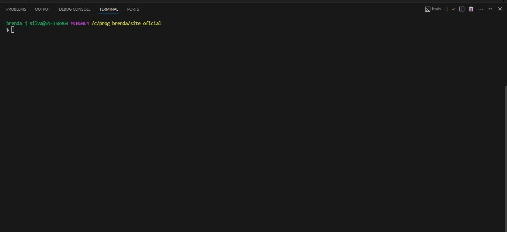

Versionamento
O versionamento de software pode ser descrito como um processo de controle de versões, o que é estabelecido por meio de códigos.
Git
GitBash

O versionamento de software pode ser descrito como um processo de controle de versões, o que é estabelecido por meio de códigos.